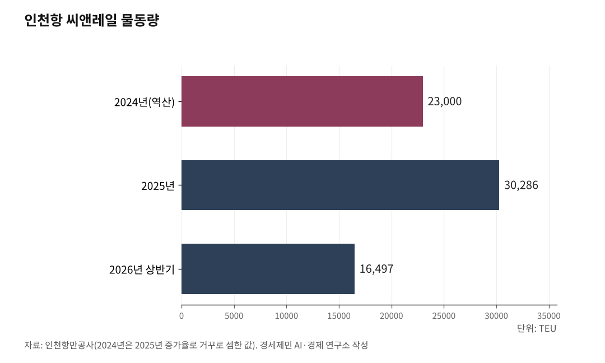
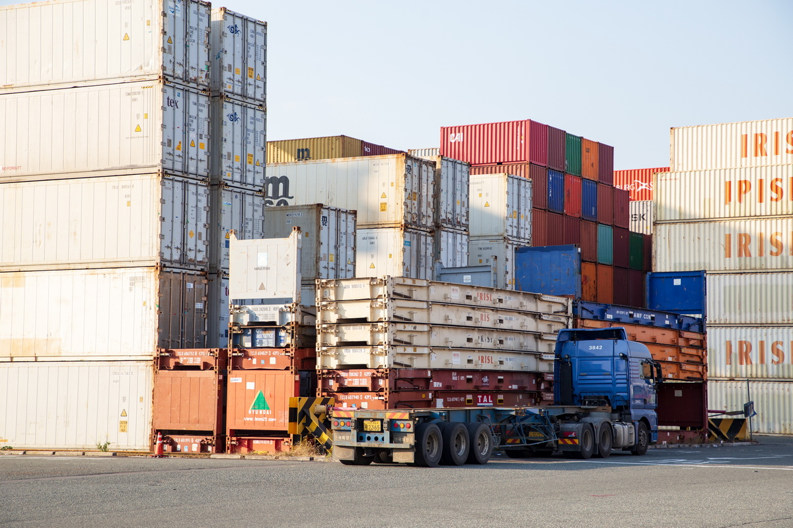

[환황해 철도망③] 중국 항만에서 대륙철도 타는 한국 화물, 인천 씨앤레일 3만286TEU
인천~친황다오~몽골 자민우드 열흘, 오봉역~알마티 19일
열차로 갈아타는 짐은 카페리의 5% 안팎, 코레일 국제 화물열차는 중국철도와 협약 뒤 12회
북한 없이 오늘 쓰는 길, 걸림돌은 국내 철도 분담률 1.1%와 국경 환적
대륙철도를 말하면 북한이 먼저 나온다. 한국 화물은 이미 대륙철도를 탄다. 인천과 부산에서 배로 황해를 건너 중국 항만에 닿은 뒤 열차로 몽골과 중앙아시아에 들어간다. 바다와 철도를 잇는 이 방식을 씨앤레일(Sea&Rail) 또는 해철(海鐵) 연계라 부른다. 그 길이 얼마나 넓은지 숫자로 짚는다.
1. 인천 카페리에서 몽골행 열차로
한국경제가 2026년 7월 29일 전한 인천항만공사 집계를 보면 상반기 인천항 씨앤레일 물동량은 1만6497TEU였다. 1년 전 같은 기간보다 12.3% 늘었다. TEU는 20피트 컨테이너 한 개를 세는 단위다. 2025년 한 해 물동량은 3만286TEU로 전년보다 28.6% 늘었다.
길은 이렇다. 인천에서 뜬 한중 카페리가 옌타이·친황다오·칭다오·웨이하이 같은 중국 항만에 컨테이너를 내린다. 카페리는 사람과 함께 컨테이너도 싣는 배다. 짐은 거기서 중국횡단철도(TCR)나 몽골횡단철도(TMGR)에 실린다. 그 열차가 중앙아시아와 몽골로 들어간다.
인천~친황다오 항로를 운영하는 진인해운은 2025년 3월 블록트레인 시범 운행을 마쳤다. 블록트레인은 출발지에서 목적지까지 화차를 떼지 않고 가는 직통 화물열차다. 한 번에 화차 45~55량을 묶는다. 그해 4월에는 친황다오에서 주 2회 떠나는 급행 열차를 정식으로 열었다.
인천항만공사는 인천에서 몽골 자민우드까지 19일 걸리던 운송을 열흘 안에 끝내는 서비스를 열었다고 밝혔다. 주 2회 정기 급행열차가 그 바탕이다. 출발 요일이 정해지면 화주는 도착 날짜를 미리 셈할 수 있다. 배와 열차를 잇는 매듭 하나로 일수를 절반 가까이 줄이겠다는 계획이다.

2. 오봉역에서 알마티까지 19일
코레일도 같은 방식을 열었다. 2024년 6월 13일 경기 의왕 오봉역에서 첫 수출 화물열차가 떠났다. 컨테이너는 철도로 부산항에 간 뒤 배로 중국 롄윈강에 닿았다. 거기서 다시 열차에 실려 중앙아시아로 들어갔다. 그해 12월까지 모두 네 차례 달렸다.
첫 열차는 타지키스탄 후잔트까지 7123km를 32일 만에 갔다. 국토교통부 자료를 보면 이 열차가 카자흐스탄까지 28일, 우즈베키스탄까지 30일 걸렸다. 한 나라로 가는 짐만 묶은 전용열차로 바꾸자 알마티(6044km)까지 19일, 타슈켄트(7010km)까지 22일로 줄었다.
실린 짐은 현지 자동차공장에서 쓸 반조립 부품과 전자제품이었다. 첫 열차는 여러 나라를 거치며 국경역에서 짐을 옮겨 싣느라 시간을 더 썼다. 전용열차는 국경역 환적과 통관 시간을 줄였다. 대륙철도의 경쟁력은 레일 위보다 국경과 항만에서 갈린다.
제도 기반은 그보다 먼저 깔렸다. 한국은 2018년 6월 북한의 찬성으로 국제철도협력기구(OSJD) 정회원이 됐다. 이언경 등 연구진은 이 가입으로 유라시아와 잇는 "복합물류체계 기반이 마련되었다"고 적었다.
코레일은 2024년 컨테이너운송협약과 통일 통과운임(ETT) 협약에 가입했다. ETT는 국경을 넘는 화물의 운임을 나라 사이에 정산하는 기준이다. 2026년 5월에는 OSJD 화물분과 ETT 회의를 서울에서 열었다. 14개국 철도기관이 모였다.

3. 카페리 짐의 5% 안팎인 실개천
문제는 규모다. 코레일이 2024년 네 차례 실어 나른 화물은 40피트 컨테이너 215개(430TEU)였다. 2025년에는 수출 화물열차가 다섯 차례 떠났다. 김태승 코레일 사장은 2026년 7월 레일웨이가제트 인터뷰에서 중국철도와 손잡은 뒤 국제 화물을 모두 열두 차례 날랐다고 밝혔다.
인천항 카페리는 2024년 컨테이너 44만4420TEU를 실어 날랐다. 같은 해 진인해운이 몽골횡단철도로 보낸 물량은 6846TEU로 그 1.5%였다. 다른 선사 몫까지 더한 인천항 씨앤레일 전체는 2025년 수치로 거꾸로 셈하면 2024년 2만3000TEU 남짓이다.
카페리 물동량의 5% 안팎이다. 스무 개 가운데 하나꼴로 열차로 갈아탄다. 몽골과 중앙아시아로 가는 길은 열렸지만 아직 실개천이다. 물길을 넓히려면 짐이 어디서 막히는지부터 봐야 한다.
4. 국내 철도와 국경 환적이라는 두 병목
대륙철도의 병목이라 하면 흔히 북한을 떠올린다. 그러나 지금 이 길에 북한은 없다. 인천이나 부산에서 뜬 배가 북한을 거치지 않고 중국 항만에 닿는다. 그런데도 물량이 적은 까닭은 두 군데에 있다. 하나는 한국 안이고 다른 하나는 국경이다.
먼저 한국 안이다. 국내 화물 수송에서 철도가 맡는 몫은 톤 기준 1.1%(2023년)다. 화물 100톤 가운데 1.1톤만 철도로 간다. 2024년 시범 열차는 오봉역에서 부산항까지 철도로 이었다. 코레일 수출 화물열차는 그해 네 차례, 2025년 다섯 차례 떠났을 뿐이다.
국경 사정은 이언경 연구진의 2019년 논문에 나온다. 연구진은 대륙철도 운송 실무전문가 27명에게 21개 애로 항목을 물었다. 기술 부문은 "열악한 환적 기술이 81.1%로 매우 불편한" 것으로 나타났다. 이 부문 세 항목 가운데 먼저 풀 과제로도 전문가 78.9%가 환적시설을 꼽았다.
러시아와 카자흐스탄은 폭 1520mm 광궤를 쓴다. 중국과 남북한은 1435mm 표준궤를 쓴다. 논문은 국경에서 대차를 바꾸거나 짐을 옮겨 싣는 데 평균 2일이 걸린다고 적었다. 코레일도 중국 항만과 국경역 두 곳의 환적을 다듬어 일수를 줄였다고 밝혔다.
시설 부문 애로 1위는 항만 안에 인입철도가 없거나 연계 도로가 나쁜 문제로 74.5점이었다. 다만 연구진은 이를 "러시아, 중국의 인입철도와 연계 도로가 열악하여 발생하는 문제"라고 적었다. 한국 항만의 일로 읽으면 안 된다. 국내 구간의 약점은 분담률 1.1%가 따로 말해 준다.
5. 북한 없이 오늘 쓰는 길
이 길은 북한이 열리기를 기다리지 않고 오늘 쓸 수 있다. 인천항만공사는 미국·이란 전쟁으로 해상운송이 제한돼 육로 이송이 늘었다고 설명했다. 중고차 수출 증가와 몽골횡단철도 운송의 본격화도 함께 들었다.
바닷길 사정은 하반기 내내 나빴다. 7월에는 호르무즈 해협이 마비된 데 이어 후티 반군이 내건 홍해 봉쇄까지 겹쳤다. 9월에도 호르무즈는 사실상 막혀 있었다. 상하이컨테이너운임지수(SCFI)는 9월 둘째 주 3662.18로 2년 2개월 만에 가장 높았다.
이언경 연구진 조사에서 실무자들이 이용 노선을 고른 1순위 이유는 운송비용이 70%였다. 운송시간이 20%, 정시성과 정부지원이 5%씩이었다. 값과 날짜가 맞으면 짐은 길을 바꾼다. 바닷길이 막혀 운임이 뛸 때 해철 연계는 보험 노릇을 한다.
연구진은 국경 환적시설 개선을 1단계 과제로 꼽았다. 통관 간소화와 표준 운임제 도입은 2단계였다. 항만 인입철도 건설 등은 3단계에 놓였다. 코레일은 2025년 1월 OSJD 복합운송협정 비준이 끝나면 정기열차 쿼터를 안정적으로 확보할 수 있다고 밝혔다.
인천항 씨앤레일은 2025년 3만286TEU였다. 김태승 사장 말대로라면 코레일 국제 화물열차는 중국철도와 협약한 뒤 2년 남짓 열두 차례 떠났다. 한국 화물의 대륙철도 출발역은 아직 중국 항만에 있다. 그 출발역을 인천으로 끌어오려면 국내 철도와 항만부터 이어야 한다.
※ 이 기사는 AI 프로그램 클로드를 활용해 작성했습니다.
참고문헌
공식 발표자료와 공공기록
· 인천항만공사, "인천항-몽골 간 씨앤레일(Sea&Rail) 확대로 몽골향 수출 컨테이너 운송 시간 크게 단축", 2025.4.29., https://www.icpa.or.kr/article/view.do?articleKey=29953&boardKey=217&menuKey=3996
· 한국철도공사, "코레일, '철도‧해운 결합' 국제복합운송 시범사업 완료", 2025.1.3., https://info.korail.com/info/selectBbsNttView.do?key=911&bbsNo=199&nttNo=23987
· 국토교통부, "중앙아시아 물류 수출 새 길을 열었다. 철송·해운 연계 국제복합운송 시범사업 완료", 2025.1.3.(보도자료 PDF 사본), https://itskorea.kr/downloadFile.do?fileId=FILE_000000000094768&fileSn=1
· 국토교통부, "수송량 및 수송분담률", e-나라지표, 2026.4.1. 갱신, https://www.index.go.kr/unity/potal/main/EachDtlPageDetail.do?idx_cd=1245
논문
· 이언경·이수영·김보경·어승섭, "한국-유라시아간 해륙복합운송 문제점 및 해결 우선순위 분석", 한국항만경제학회지, 제35집 제2호(2019.6.), 109-126쪽, https://koreascience.or.kr/article/JAKO201927064638471.pdf
언론 보도
· 강준완, "중동戰 불안에…인천항 화물 '中 육로 이송' 증가", 한국경제, 2026.7.29., https://www.hankyung.com/article/2026072937871
· Benjámin Zelki, "South Korea: Korail targets international expansion"(김태승 코레일 사장 인터뷰), Railway Gazette International, 2026.7.1., https://www.railwaygazette.com/passenger/2026/07/01/south-korea-korail-targets-international-expansion/
· 오영균, "코레일, 국제철도협력기구 '통일 통과운임' 협약 회의", 뉴스핌, 2026.5.12., https://www.newspim.com/news/view/20260512001296
· 목용재, "한국, 북한 찬성으로 국제철도협력기구 가입", 자유아시아방송(RFA), 2018.6.7., https://www.rfa.org/korean/in_focus/food_international_org/joinOSJD-06072018095729.html
· 김동호, "호르무즈·홍해 '동시 봉쇄' 지정학 리스크 덮쳤다… 韓수출 '물류비 폭탄' 비상", 파이낸셜뉴스, 2026.7.23., https://www.fnnews.com/news/202607220914066586
· 김지예·김현이, "“해상운임 3배 뛰어”… 공포의 물류비", 서울신문, 2026.9.14.(지면 9.15.), https://www.seoul.co.kr/news/economy/industry/2026/09/15/20260915001001
· 박준철, "4개월째 여객 '0명'…한숨만 가득한 인천항", 경향신문, 2020.4.7., https://www.khan.co.kr/article/202004071718001
사진 출처
· [사진3] 부산항만공사, "부산항 신항 1부두 컨테이너 야적장", 공공누리 제1유형
※ 이 기사는 인공지능을 활용해 작성했습니다.
관련기사
- [환황해 철도망④] 인천항 연안 컨테이너 3년째 0TEU, 끊긴 국내 컨테이너 뱃길
- [환황해 철도망②] 뱃길보다 14일 빠르고 운임은 세 배, 시간을 사는 화물의 대륙철도
- [환황해 철도망⑤] 북한 교역액의 98.2%는 중국, 국경을 넘는 철길 문은 넷
- [환황해 철도망①] 6년 만에 달린 평양~베이징 열차, 유럽행 한국 화물은 최단 36일 뱃길
저작권자 © AI경세제민 무단전재 및 재배포, AI학습 및 활용 금지